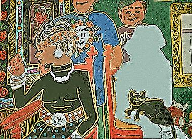

Kathryn Jacobs
Polar Bear Poem
Like polar bears on ice: they just don’t slip —
or not till recently: a little melt,
and ten fat polars lose their suction grip
and drop recumbent — soft wet creamy pelts
futile as corks in the un-stoppered sea.
It’s not supposed to happen: polars swim.
But icebergs are in short supply lately,
and bears grow weary too. We feel for them
because we’ve been there: stranded on a berg,
alone in bitter-grey immensity
longing for seals, and no it can’t get worse
and oh-dear-god, it’s shrinking. So tell me:
lord, is it asking too much just to curse
me down here with another lonely berg?
The Man Who Wouldn’t Die
I’d like to talk about the day you died,
only my friends won’t let me. Every time
I mention you they freeze and look aside,
exchanging looks between them till the sign
goes round to change the subject. Go ahead
and say it: you refuse to talk of him
Because of one small detail: he’s not dead.
So what? Pretend, already. Can they bring
you bodily before me? Bring the shirt
you wore, the car keys? Hell, if they’d just say
which way you went... okay then. Would it hurt
so terribly, the way things stand, if they
spoke sadly of your passing? Folks, he’s gone.
If I could bury him, I might move on....

Kathryn Jacobs is a poet and medievalist teaching at Texas A & M - C. Her poems have been published in Measure, Washington Literary Review, The New Formalist, 14 by 14, Poetry Midwest, and many other print and online journals. Her chapbook Advice Column (Finishing Line Press) is forthcoming this November.
|